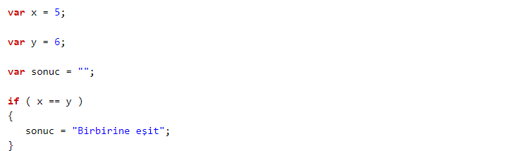
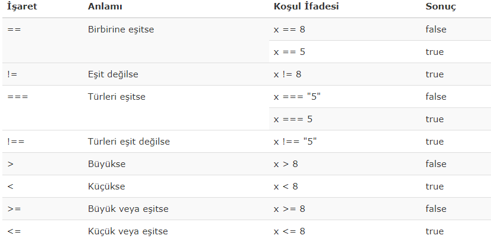
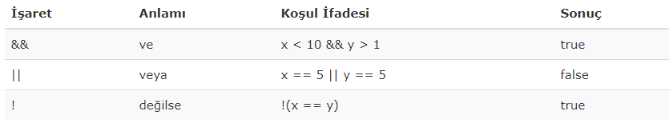
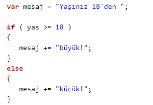
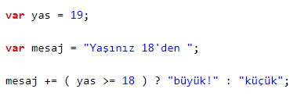

IF KOŞUL YAPILARI
Farklı durumlarda farklı işlemler yapmak gerekebilir. Bu durumların tespit edilmesi için koşul ifadeleri bize yardımcı olur.
Şartların sağlanıp sağlanılmadığını tespit ederken standart üç ifade kullanılır. Bunlar if, else if ve else'dir. Örneği inceleyelim;
Örnek
var mesaj = "";
var saat = 5;
if ( saat < 10 )
{
mesaj = "İyi sabahlar";
}
else if ( saat < 20)
{
mesaj = "İyi günler";
}
else
{
mesaj = "İyi akşamlar";
}
Örnekte saat değişkeni 5 olarak belirtilmiştir.
Bu değişkenin sayısal değerine göre mesaj değişkeninin şekillenmesi isteniyor.
Eğer saat 10'dan küçükse "İyi sabahlar", eğer 20'den küçükse "İyi günler", hiçbiri değilse "İyi akşamlar" demesi sağlanıyor.
Dikkatli incelendiğinde parantez içerisinde koşullara yer veriliyor.
* if ( koşul sağlanıyorsa ) { şunları yap }
* else if ( koşul sağlanıyorsa ) { şunları yap }
* else { şunları yap }
Koşul oluştururken mutlaka IF ile başlanır. Parantez içinde koşul belirtilir ve yapılacaklar kıvrımlı parantez içinde yazılır.
ELSE IF kullanmak için öncelikle IF kullanmış olmak gereklidir.
Yani IF kullanmadan ELSE IF ile bir kontrol yapılamaz. "O olmadı bari bunu dene" anlamı taşır.
ELSE kullanırken parantez açılmaz ve koşul yazılmaz. ELSE, diğer tüm if ve else ifler çalışmadıysa, yani hiçbir koşul
sağlanılamadıysa yapılacak şeyi belirtir.
Koşul Operatörleri
Koşul ifadeleri mantıksal değerlerdir. Doğru (true) ya da yanlış (false) olabilirler. İki eşittir (==) bir koşul ifadesidir ve iki değişken ya da değerin denkliğini doğrulamayı sağlar. Örneğin;Örnek

Şimdi bu koşul ifadelerini ve anlamlarını listeleyelim:
Karşılaştırmalar
NOT: Aşağıdaki örneklerde x'in değeri 5 alınacaktır!
Mantıksal İfadeler
NOT: Aşağıdaki örneklerde x = 6 ve y = 3 alınacaktır!
Mantıksal ifadelerden ve (&&) bağlacında her iki durum da doğru ise koşul sağlanır. Eğer veya (||) bağlacı kullanılmışsa belirtilen koşullardan sadece biri doğru olsa da önerme doğrudur.
Koşul İfadelerini Tek Satırda Kullanmak
Örnek
Örnek
